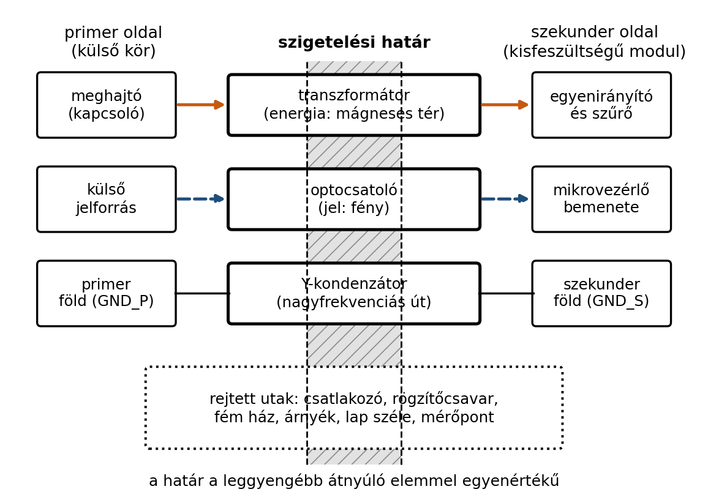
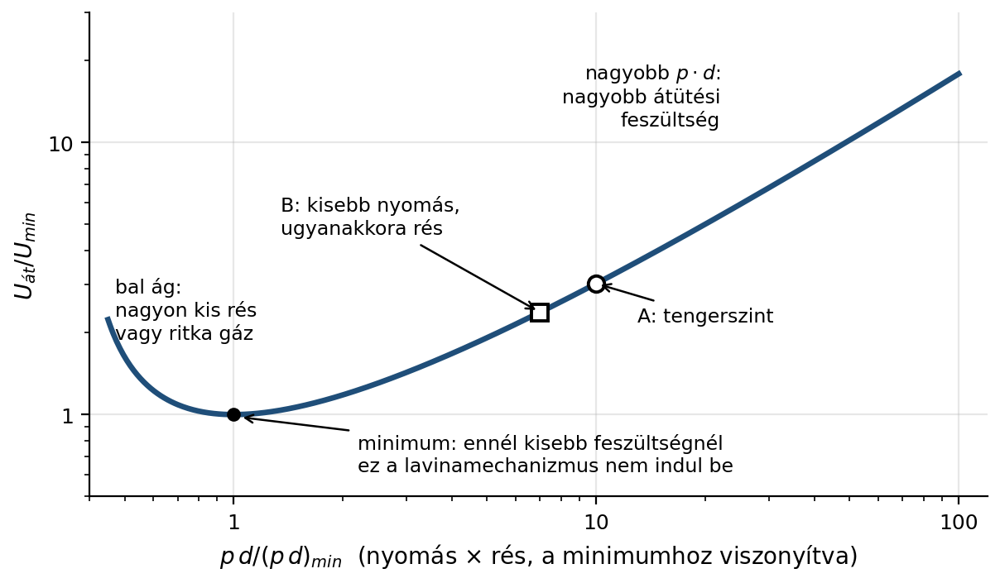
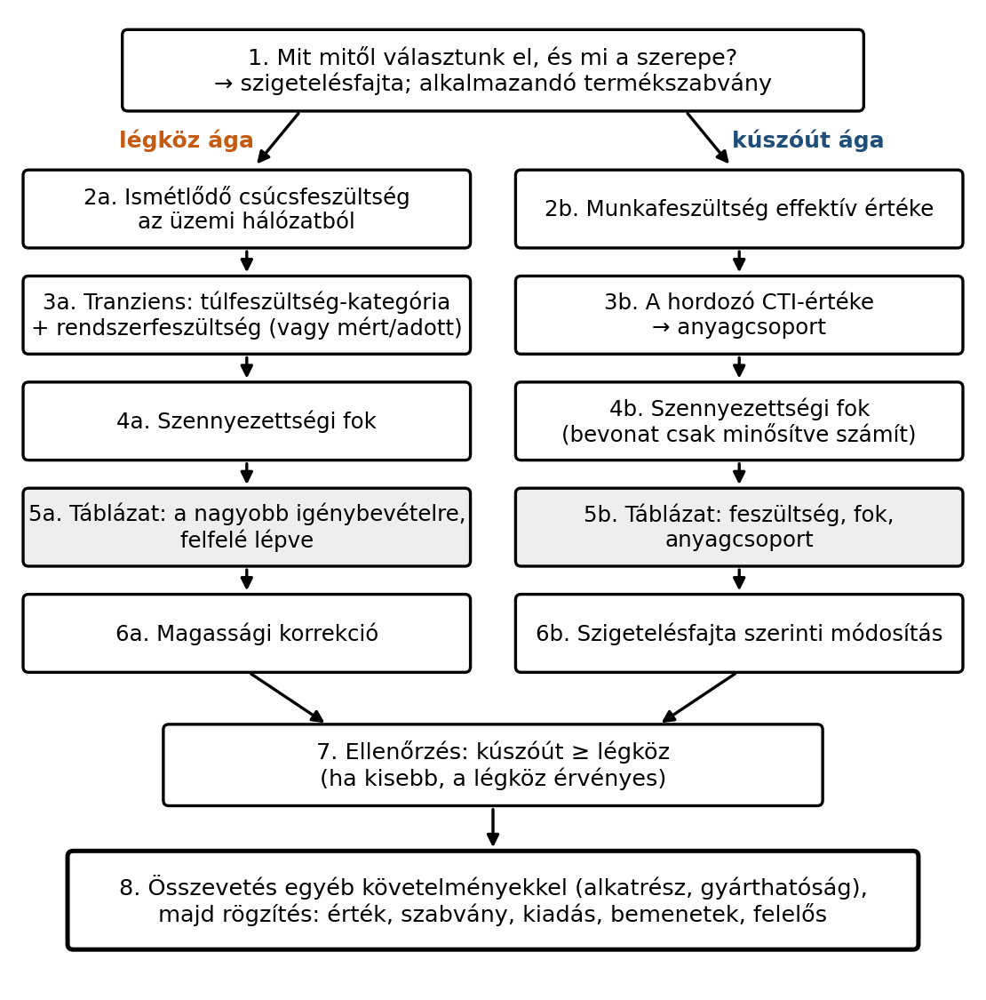
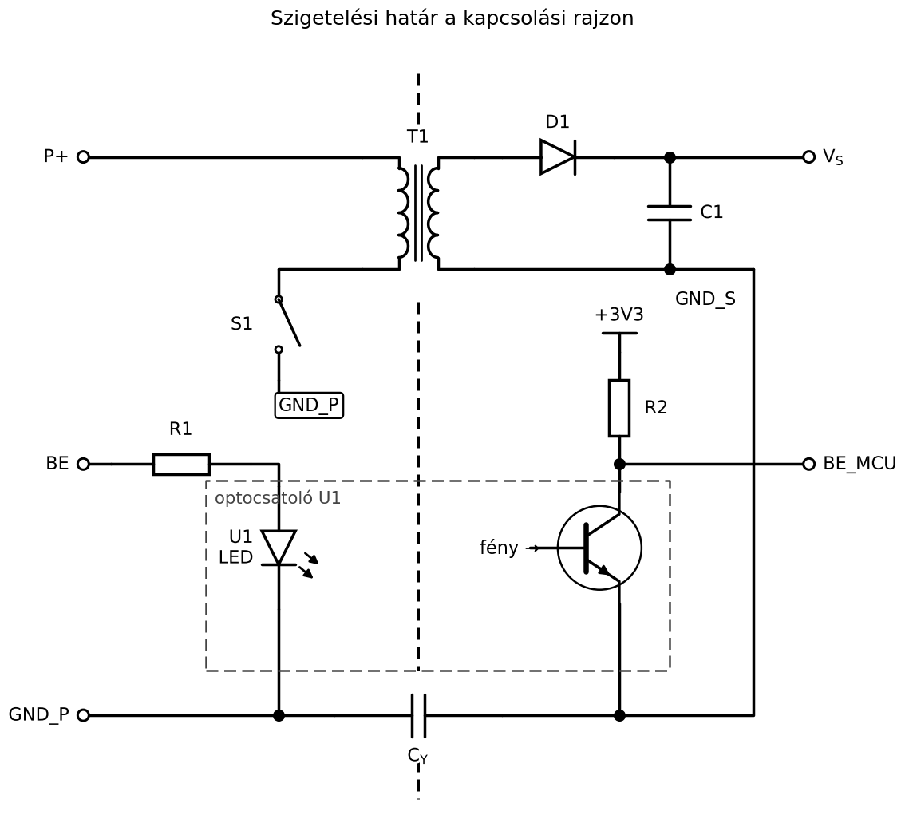

Ennek az alfejezetnek a végére:
Előfeltétel Az áram élettani hatásai és a törpefeszültség, a Tokozások: furatszerelt és SMD, a Transzformátor, csatolt tekercsek és kristályok és a Mikrovezérlő GPIO illesztése terhelésekhez.
Fontos figyelmeztetés előre. Ebben az alfejezetben minden számtáblázat kitalált mintaadat: a keresés logikáját gyakorlod rajtuk, tervezni velük tilos. A valódi távolságokat az alkalmazandó szabvány hatályos kiadásából kell venni.
A szenzormodulból leválasztott változatot kérnek: egy digitális bemenete olyan külső készülékről kap jelet, amelynek a földpotenciálja ismeretlen, és működés közben akár több tíz volttal is eltérhet a modulétól. A Mikrovezérlő GPIO illesztése terhelésekhez szerint erre optocsatolót teszünk. Igen ám, de a két oldal vezetői ugyanazon a lapon futnak. Milyen messze legyenek egymástól? Elég a „lehetőleg messze”, vagy az 1 mm? És számít-e, hogy a készülék poros műhelyben vagy magas hegyen működik?
A NYÁK-tervező ezt nem tudja kitalálni a rajzból: neki számszerű, indokolt követelmény kell. A hálózati feszültségű berendezések méretezése és tanúsítása nem témánk; a példák törpefeszültségűek, de a gondolkodás menete ugyanaz.
Két vezető között az áram két nemkívánatos úton juthat át: a levegőn keresztül egy hirtelen szikrával, vagy a szigetelő felületén egy lassan kialakuló vezető csíkon. Ennek megfelelően két távolságot mérünk. A légköz a legrövidebb út levegőben, mint a madáré egy árok fölött. A kúszóút a legrövidebb út a felületen, mint a hangyáé, amely az árok aljára is lemászik. A hasonlat korlátja: a villamos átütés nem „választ útvonalat” tudatosan, és a két hibamód fizikája és időskálája teljesen más.
Gondolkodj előre: a két vezető közé hornyot marunk a szigetelőbe. Melyik távolság nő, és mi történik, ha a horony nagyon keskeny?
A horony csak a kúszóutat növeli: a levegőben mért út egyenesen átível fölötte. A nagyon keskeny hornyot a por és a nedvesség áthidalja, ezért a méretezésben nem számít. A kiemelkedő borda mindkét utat hosszabbítja.
A távolság azonban nem csak két rézfoltra vonatkozik. Egy leválasztott rendszerben egy egész szigetelési határ húzódik, és minden, ami átnyúl rajta, a határ része.

A levegő jó szigetelő, amíg az elektromos térerősség el nem éri azt az értéket, amelynél a szabad elektronok ütközéssel újabb elektronokat szakítanak ki, és lavina indul. Homogén (egyenletes) térben a térerősség
ahol a feszültség, a rés. Dimenzió: V/m, gyakorlatban V/mm. Normál körülmények között a levegő átütési térerőssége centiméteres résnél nagyságrendben 3 kV/mm (ellenőrizendő: fizikai táblázat). Ez nem méretezési érték: éles sarkoknál, vezetőéleknél a tér sűrűsödik, ezért jóval kisebb feszültség is átüthet, és a szabvány tartalékot is előír.
Kis réseknél a viszony nem arányos. A Paschen-törvény szerint egyenletes térben az átütési feszültség a gáznyomás és a rés szorzatától függ, és van egy minimuma; levegőben ez néhány száz volt (ellenőrizendő: fizikai táblázat). Ennél kisebb feszültség ezzel a lavinamechanizmussal nem üti át a rést (nagyon kis réseknél más jelenségek léphetnek fel).

A görbe jobb ágán a kisebb nyomás balra tol: magaslaton ugyanakkora rés kisebb feszültségen üt át. Ezért nő a szükséges légköz a magassággal.
A szigetelő felületén por, só és pára vékony, gyengén vezető réteget alkothat. A feszültség hatására ezen kúszóáram folyik, amely melegíti és helyenként kiszárítja a réteget; a száraz csíkokon apró ívek gyulladnak, elszenesítik az anyagot, és a szén tartós vezető nyomot hagy. Ez a nyomképződés (tracking). Lassú folyamat, órák vagy évek alatt alakul ki, és a hőtermelés számít, ezért főleg az effektív feszültségtől függ, nem a rövid csúcsoktól.
Definíció. A légköz (clearance) két vezető rész közötti legrövidebb út levegőben. A kúszóút (creepage distance) két vezető rész közötti legrövidebb út a szigetelő anyag felületén.
Definíció. A munkafeszültség (working voltage) a szigetelésen rendeltetésszerű működés közben, névleges táplálás mellett fellépő legnagyobb feszültség; effektív értéke és ismétlődő csúcsértéke (recurring peak) külön adat. A tranziens túlfeszültség ritka, rövid impulzus (kapcsolás, villám hatása).
A bemenetek, a bennük szereplő fogalmak az IEC 60664-1 fogalomrendszerét követik (ellenőrizendő: IEC 60664-1, hatályos kiadás) [S-IEC60664]:
| Bemenet | Jelentése | Mit befolyásol |
|---|---|---|
| munkafeszültség (effektív) | tartós hőterhelés | kúszóút |
| ismétlődő csúcs | periodikusan fellépő legnagyobb érték | légköz |
| túlfeszültség-kategória I–IV | a kör mennyire van kitéve tranzienseknek a betáplálástól nézve | tranziens csúcs, így légköz |
| szennyezettségi fok (pollution degree) 1–4 | mennyi vezetőképes szennyeződés várható | mindkettő, főleg kúszóút |
| CTI és anyagcsoport (I, II, IIIa, IIIb) | a hordozó nyomképződéssel szembeni ellenállása | kúszóút |
| tengerszint feletti magasság | levegő sűrűsége | légköz |
| szigetelésfajta | mi a védelmi szerepe | mindkettő |
A CTI (comparative tracking index) laboratóriumi csepegtetéses vizsgálatból származó feszültségszám (ellenőrizendő: IEC 60112); minél nagyobb, annál ellenállóbb az anyag. A szabvány a CTI alapján anyagcsoportokba sorol. A kategóriák egyszerűsítve (ellenőrizendő: IEC 60664-1): IV a betáplálás közelében, III a rögzített épületinstallációban, II az onnan táplált fogyasztókészülékekben, I a külön túlfeszültség ellen védett körökben. A szennyezettségi fok: 1 nincs vagy csak száraz, nem vezető szennyeződés; 2 általában nem vezető, alkalmi páralecsapódással; 3 vezető vagy páralecsapódástól vezetővé váló; 4 tartósan vezető (ellenőrizendő: IEC 60664-1).
Az áram élettani hatásai és a törpefeszültség előrevetítette, miért nem mindegy, mit véd egy szigetelés (a fogalmakat az IEC 61140 és IEC 60664-1 rögzíti, ellenőrizendő) [S-IEC61140]:
| Fajta | Szerepe |
|---|---|
| funkcionális | csak a működéshez kell (ne legyen zárlat); áramütés ellen nem véd |
| alap (basic) | alapvédelem az áramütés ellen |
| kiegészítő (supplementary) | független második réteg az alapszigetelés meghibásodásának esetére |
| kettős (double) | alap- és kiegészítő szigetelés együtt |
| megerősített (reinforced) | egyetlen szigetelés, a kettőssel egyenértékű védelemmel |
A szenzormodul belső, VIN és GND közötti távolsága funkcionális szigetelés: egy tanúsított adapterről táplált törpefeszültségű modulban a biztonsági határ az adapterben van. Ha viszont egy ismeretlen, veszélyes feszültségű oldal is lehet a lapon, ott biztonsági szigetelés kell.

Röviden, egyszerűsített alakban:
Itt a légköz, a kúszóút (mm), a tranziens, az ismétlődő csúcs, a szennyezettségi fok, az anyagcsoport, a magassági szorzó (dimenzió nélküli). A képlet nem fizikai törvény, hanem a táblázatkeresés vázlata. A szigetelésfajta módosítja: megerősítettnél a szabványi logika szigorúbb sort, illetve nagyobb kúszóutat ír elő (a módosítás pontos módja ellenőrizendő: a termékszabvány és az IEC 60664-1).
Két keresési szokás fontos. Ha nincs pontos sor, rendszerint felfelé lépünk (a szigorúbb irányba); interpolálni csak ott szabad, ahol a szabvány megengedi. A bevonat pedig csak akkor csökkenti a hatásos szennyezettségi fokot, ha a bevonat és a felvitele a szabvány feltételeit teljesíti (ellenőrizendő: IEC 60664-3); egy ránézésre „lelakkozott” lap nem számít annak.
Az IPC-2221 nyomtatott lapok általános tervezési szabványa; vezetőtávolság-táblázata sorokban a vezetők közötti csúcsfeszültséget, oszlopokban a helyzetet (belső réteg, bevonat nélküli vagy bevont külső felület, magassági tartomány, szerelvény) adja meg (értékek ellenőrizendők: IPC-2221 hatályos kiadás) [S-IPC2221]. Funkcionális távolságokhoz jó kiindulás, de biztonsági szigetelésnél nem elég: ott a termékre vonatkozó biztonsági szabvány követelményei az irányadók, például IEC 62368-1 (audio-, videó-, informatikai és távközlési eszközök) [S-IEC62368] vagy IEC 61010-1 (mérő-, vezérlő- és laboratóriumi berendezések) [S-IEC61010] (ellenőrizendő: alkalmazási terület és hatályos kiadás).

A rajzon a határt szaggatott vonal vagy keret jelöli, és a két oldalnak külön hálózatneve van (GND_P, GND_S). A határon csak olyan elem nyúlhat át, amelyet erre minősítettek: transzformátor megadott szigeteléssel, optocsatoló vagy digitális leválasztó, relé, és kizárólag biztonsági osztályú Y-kondenzátor (ellenőrizendő: IEC 60384-14). Az Y-kondenzátor a leválasztó átalakító nagyfrekvenciás közös módusú áramának (Az EMC alapjai: forrás, csatolás, vevő) ad rövid visszautat, de váltakozó áramot átvezet: a határ egyenáramra nyitott, váltakozó áramra nem.
A határ a leggyengébb átnyúló úttal egyenértékű:
ahol az -edik út (tok, lapfelület, csatlakozó, csavar) távolsága, külön a légközre és a kúszóútra. Ha egy út közbenső, lebegő fémdarabon vezet át, a fém nem „szigetel”: közelítőleg csak a szigetelő szakaszok összege számít (a szabvány részletszabályai ellenőrizendők).
Definíció. A szigetelési követelmény a határhoz tartozó adatlap a NYÁK-tervezőnek:
| Mező | Példa (a leválasztott bemenethez) |
|---|---|
| oldalak, hálózatok | BE, GND_P ↔︎ minden más hálózat |
| szigetelésfajta és szabvány | megnevezve, kiadással |
| feszültségek | effektív, ismétlődő csúcs, tranziens |
| környezet | kategória, szennyezettségi fok, magasság |
| anyag | előírt legkisebb CTI |
| eredmény | légköz és kúszóút mm-ben, forrással |
| átnyúló elemek | U1: tok légköze, kúszóútja, minősítése |
| tiltások | a határsávban nincs réz, furat, mérőpont |
Továbbvitt eredmény. A szigetelési határt a kapcsolási rajzon keretezve, külön hálózatnevekkel jelöljük, az átnyúló alkatrészeket felsoroljuk, és a NYÁK-tervezőnek mérhető követelményt (légköz, kúszóút, bemenetek, forrás) adunk át. Erre épül a Kapcsolási rajz konvenciói és a NYÁK-tervezőnek átadott kényszerek és a Tervezési átvizsgálás és átadás a NYÁK-tervezésnek.
Továbbvitt eredmény. A légközt a csúcs- és tranziens feszültség és a magasság, a kúszóutat az effektív munkafeszültség, a szennyezettségi fok és az anyagcsoport méretezi; mindkettő a szigetelésfajtától is függ, és a kúszóút nem lehet kisebb a légköznél. Ezekre hivatkozik a Megfelelőség: CE, irányelvek, RoHS és a termékbiztonság logikája és a Tervezési átvizsgálás és átadás a NYÁK-tervezésnek.
Feladat (kitalált): a leválasztott bemenet külső oldala 60 V effektív munkafeszültségű, ismétlődő csúcsa 90 V, II. kategória, 60 V-os rendszerfeszültség, 2. szennyezettségi fok, a hordozó CTI-értéke 200, magasság 0 m. Alap- és megerősített szigetelésre is számolunk.
MINTAADAT – NEM SZABVÁNYI ÉRTÉK (kivonat a
code/elkit/data mintatábláiból):
| Légköz, 2. fok: feszültség legfeljebb | 100 V | 200 V | 400 V | 900 V |
|---|---|---|---|---|
| légköz [mm] | 0,3 | 0,4 | 0,6 | 1,0 |
| Kúszóút, 2. fok, III. csoport: effektív feszültség | 25 V | 50 V | 100 V |
|---|---|---|---|
| kúszóút [mm] | 1,0 | 1,4 | 2,0 |
Józanész-ellenőrzés: a szigorúbb szigetelés és a nagyobb magasság mindig nagyobb távolságot ad, a kúszóutat pedig a magasság nem változtatta.
Az elkit.rules ugyanezt a folyamatot lépésenként kiírja,
és minden eredményen jelzi, hogy mintaadat. A surface_paths
a keresztmetszeti geometriát számolja.
from elkit import rules
req = rules.InsulationRequest(working_rms=60, peak=90, category="II", system_voltage=60,
pollution_degree=2, cti=200, altitude=3000,
insulation="megerősített")
print(rules.design_distances(req).report())*** MINTAADAT – NEM SZABVÁNYI ÉRTÉK ***
1. anyagcsoport: CTI = 200 → IIIa
2. szennyezettségi fok: 2
3. tranziens: II. kategória, 60 V → 400 V
4. légköz: max(tranziens, csúcs) = 400 V, egy fokozattal feljebb → 1 mm
5. magasság 3000 m: szorzó 1.15 → légköz 1.15 mm
6. kúszóút: 60 V eff., oszlop pd2_III → 1.52 mm
7. megerősített szigetelés: kúszóút × 2 → 3.04 mm
légköz >= 1.15 mm, kúszóút >= 3.04 mm (mintaadat – nem szabványi érték)A bemenetek hatását egy kis söprés mutatja (alapszigetelés, tengerszint):
print("fok CTI csoport légköz kúszóút [mm, MINTAADAT]")
for pd in (1, 2, 3):
for cti in (600, 200):
r = rules.design_distances(rules.InsulationRequest(
working_rms=60, peak=90, impulse=400, pollution_degree=pd, cti=cti))
print(f"{pd:3d} {cti:4d} {r.material_group:7s}"
f" {r.clearance_mm:6.2f} {r.creepage_mm:8.2f}")
for name, kw in (("sima", {}), ("horony 1 mm", {"groove": (1.5, 1.0, 1.5)}),
("horony 0,5 mm", {"groove": (1.75, 0.5, 1.5)}),
("borda 1 mm", {"rib": (1.5, 1.0, 1.5)})):
g = rules.surface_paths(4.0, pollution_degree=2, **kw)
print(f"{name:14s} légköz {g['clearance']:.2f} kúszóút {g['creepage']:.2f}")fok CTI csoport légköz kúszóút [mm, MINTAADAT]
1 600 I 0.40 0.40
1 200 IIIa 0.40 0.40
2 600 I 0.60 0.76
2 200 IIIa 0.60 1.52
3 600 I 1.30 1.86
3 200 IIIa 1.30 2.52
sima légköz 4.00 kúszóút 4.00
horony 1 mm légköz 4.00 kúszóút 7.00
horony 0,5 mm légköz 4.00 kúszóút 4.00
borda 1 mm légköz 5.24 kúszóút 7.00Az 1. fokban az anyagcsoport nem számít, és a kiolvasott kúszóút a légköznél kisebb lenne, ezért a 8. lépés a légközre emeli (0,40 mm). A 3. fokban a rosszabb anyag és a szennyezettség együtt nagyobb távolságot kér.
A légköz a levegőbeli, a kúszóút a felületi legrövidebb távolság. A levegő gyorsan, a csúcs- és tranziens feszültségre üt át, nagyobb magasságban könnyebben; a felület lassan, szennyeződés, pára és az anyag (CTI) szerint nyomképződéssel romlik. A méretezés bemenetei: munka- és csúcsfeszültség, tranziens (túlfeszültség-kategória), szennyezettségi fok, anyagcsoport, magasság, szigetelésfajta (funkcionális, alap, kiegészítő, kettős, megerősített). A kúszóút nem lehet kisebb a légköznél. A konkrét értékek a hatályos termékszabványból, az IEC 60664-1-ből vagy funkcionális esetben az IPC-2221-ből jönnek (ellenőrizendő). A kapcsolási rajzon a szigetelési határt jelöld, az átnyúló alkatrészeket és rejtett utakat sorold fel, és mérhető követelményt adj a NYÁK-tervezőnek: a határ annyit ér, mint a leggyengébb útja.
Légköz: ismétlődő csúcs, magasság, túlfeszültség-kategória. Kúszóút: CTI, effektív munkafeszültség. Mindkettő: szennyezettségi fok (és a szigetelésfajta).
Légköz 4 mm. Kúszóút széles horonynál mm (a két oldalfal hozzáadódik, a horony alja a szélességet pótolja); áthidalt horonynál 4 mm.
Légköz: V → 0,6 mm. Kúszóút: 35 V a 25 és 50 V között: mm. ✓.
mA. 50 Hz-en tízezerszer kisebb, kb. 1,8 µA. A megengedett szivárgóáramot a termékszabvány korlátozza (ellenőrizendő).
mm (közelítés, a szabvány részletszabályai ellenőrizendők). Követelmény például: „a GND_P–GND_S határsávban nincs semmilyen fém; a legrövidebb légköz és kúszóút a számítási jegyzőkönyv szerinti értéknél nem kisebb”.
, így . 10-nél , 7-nél ; az arány 0,78. Visszaállításhoz kell, azaz a rés 1,43-szoros. Ez elméleti modell egyenletes térre, nem szabványi magassági szorzó.
Megoldás:
need = rules.design_distances(rules.InsulationRequest(
working_rms=60, peak=90, category="II", system_voltage=60,
pollution_degree=2, cti=200, insulation="megerősített"))
paths = {"U1 tok": (4, 4), "T1": (5, 4), "C_Y": (6, 6), "laprés": (3, 3),
"csavarfej": (2.8, 2.8)}
print(f"követelmény (minta): {need.clearance_mm:g} / {need.creepage_mm:g} mm")
for name, (cl, cr) in paths.items():
ok = cl >= need.clearance_mm and cr >= need.creepage_mm
print(f"{name:10s} {cl:4g} / {cr:<4g} {'rendben' if ok else 'NEM FELEL MEG'}")
print("a határ leggyengébb kúszóútja:", min(cr for _, cr in paths.values()), "mm")követelmény (minta): 1 / 3.04 mm
U1 tok 4 / 4 rendben
T1 5 / 4 rendben
C_Y 6 / 6 rendben
laprés 3 / 3 NEM FELEL MEG
csavarfej 2.8 / 2.8 NEM FELEL MEG
a határ leggyengébb kúszóútja: 2.8 mmA laprés és a csavarfej kúszóútja kisebb a 3,04 mm-es mintakövetelménynél, tehát a határ ezen a két ponton hibás, hiába tágas az alkatrészek tokja.